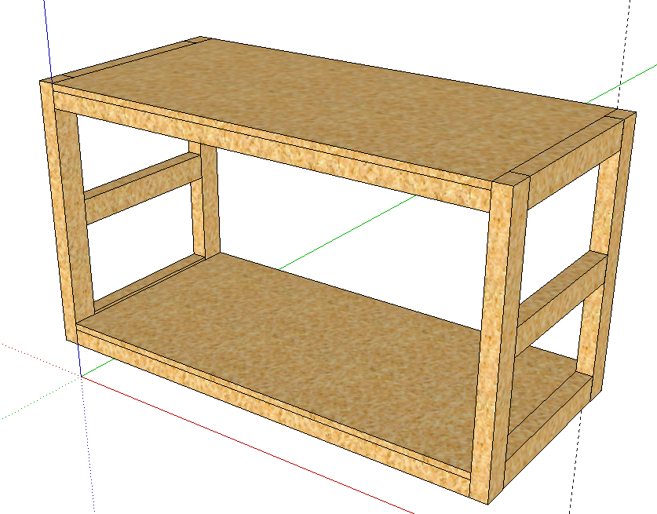
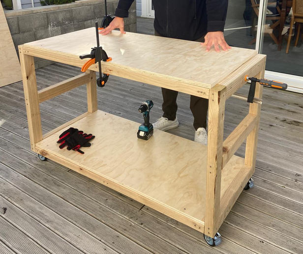

Mobile workbench
Created at: 2026-08-01

This table has been my hardest effort so far. I made several mistakes, and learned a good deal out of it.
Here is what it looks like in real life:

Learnings
- If you are nailing a nail on an angle, make sure you got a good view of how it is going in.
- If you get the nails wrong, and they go through the wood, you can use a hacksaw to cut them off.
- For the casters (wheels), it is fundamental that the area you are putting them in is flat. You will also need at least 3 screws to hold them in place if they are the 4-holes ones. That saved me because I often had 3 flat areas. You can fix any gaps by putting a coin under the caster and then tightening the screws.
- Do not hit nails too close to the edge of the wood, or they will split it.
- Clamps are your friend. Use them to hold the wood in place while you are nailing it.
- Glue the base, and then nail it. This will make it stronger. The other parts you might not need to glue. I didn't glue the frames for example. Let's see how they go!
- Long screws are a pain! I am still unsure if my drill is good enough for them. I choose a 100mm-long screw and I had a lot of trouble with it. I destroyed a few of them and had to use pliers to get them out, which wasn't a pleasent experience. I much preferred nails for this job - just make sure to wear ear muffers.
Further Improvements
I noticed that the table was "wabbly" when horizontal force was applied at the top.
I applied these horizontal 45-degree braces to the back of the table, and it is now much more stable.